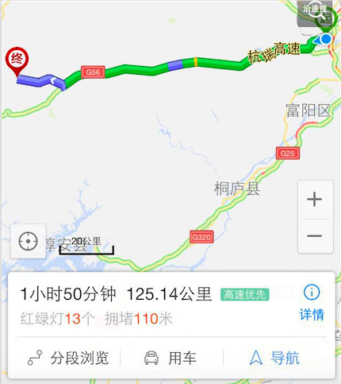
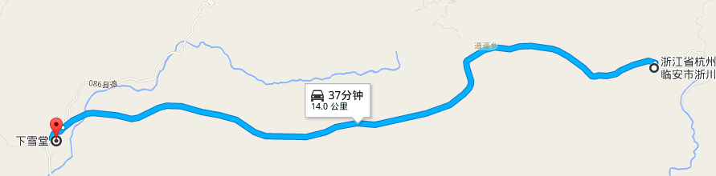

装备要炫酷
累了别哭 堵了别哭
上镜衣服、鞋
kanken、伞、身份证、纸巾
水、水果、巧克力
相机、手机、耳机
浙川村
STOP 1
出发时间：7:00 am;
出发地点：杭州;
走杭徽高速，从颊口出口下来，进入临安市的清凉峰镇，转入吉浙线，距离目的地还有大约25公里的崎岖山路。
到达时间：9:30 am

蓝天凹
STOP 2
出发时间：10:00 am;
要开始爬山啦！走走走走走走啊走~~~要在三点左右爬到！！
tips:走水泥路，第三个反光镜处有个岔路，往岔路的小路走，才是正确的徽杭古道，不然，一直沿着水泥路走，会走到别的村庄去的。
胜利的曙光
STOP 3
爬呀爬，爬呀爬，要爬12km，可以找地方住下来了
蓝天凹-->下雪堂 -- > 黄茅培 --> 施茶亭 --> 江南第一关
一定要洗一个热水澡哦！
预计到达时间：19:00 am
不知道可不可以看到晚霞呢~~~

启程回杭州
回家哦啦啦啦啦
睡睡睡睡睡，睡到自然醒！
先吃饭，再找车回浙川村；
出发时间：10:00 am
价格：包车五个人约650；时长：路上约三个小时
拿上车，走徽杭高速，回杭州！